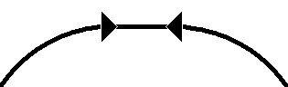
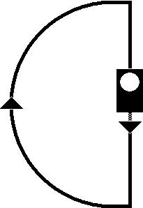

Signalbuch-Online
Signal Zp 6
Übersicht und Bedeutung des Signals Zp 6 (Handsignal, Tages- und Nachtzeichen sowie Lichtsignal).
(1)
Bedeutung
Bremse anlegen.
(2)
Handsignal, Tageszeichen
Beide Hände werden über dem Kopf zusammengeschlagen.

🌙
Handsignal, Nachtzeichen
Die weißleuchtende Handlaterne wird mehrmals mit der rechten Hand in einem Halbkreis gehoben und senkrecht schnell abgesenkt.

💡
Lichtsignal
Ein weißes Licht.